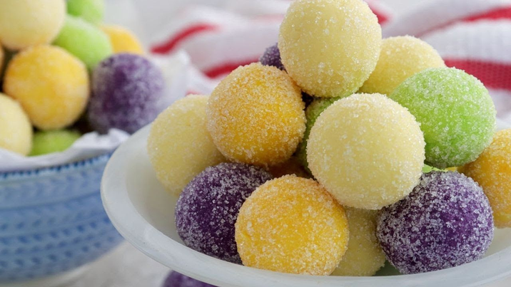

Unforgettable Pasalubong Delights:
Product Descriptions
-
Puto Bumbong
Puto bumbong is a traditional Filipino delicacy that holds a special place in the hearts of many. Made from glutinous rice called "pirurutong" or "malagkit," it's soaked in water overnight, then ground and steamed in bamboo tubes lined with muslin cloth. This process gives it a distinctive purple color and a slightly sticky texture.
The magic of puto bumbong lies in its unique cooking method. The bamboo tubes are placed vertically over a special steamer called a "lansungan," allowing the rice mixture to cook evenly and absorb the flavors of the bamboo. As it steams, the aroma of the rice mingling with the fragrant essence of the bamboo fills the air, creating an enticing sensory experience. What makes puto bumbong truly special is its association with Filipino holiday traditions, particularly during Christmas season. It's often enjoyed after attending Simbang Gabi or dawn Mass, bringing warmth and comfort to chilly December mornings.
In essence, puto bumbong is more than just a dessert; it's a symbol of Filipino culture and tradition. With its unique cooking method, distinctive flavor, and association with cherished holiday memories, puto bumbong continues to be a beloved treat that brings joy to people's hearts throughout the year.
Location:
Discover the unbeatable taste of "The Original Miranda's Puto Bumbong & Bibingka" in Calamba City, Laguna. Our delicious treats have won the hearts of many. Find them easily by clicking the Google Maps below .
-
Pastillas
Pastillas is a cherished Filipino dessert that captivates taste buds with its creamy texture and delightful sweetness. Crafted from just two main ingredients – condensed milk and sugar – this treat embodies simplicity and indulgence in every bite. Each piece of pastillas is a small, cylindrical delight, meticulously formed by hand to ensure a smooth and uniform shape. Its velvety consistency melts effortlessly in the mouth, releasing a burst of creamy sweetness that tantalizes the senses.
Wrapped in colorful cellophane or wax paper, pastillas is not only a feast for the taste buds but also a visual delight. Its vibrant packaging adds a touch of whimsy and charm, making it a popular choice for gifts or festive occasions. Whether enjoyed as a midday snack, a sweet ending to a meal, or shared with loved ones during celebrations, pastillas brings joy and nostalgia to every moment. Its timeless appeal transcends generations, evoking feelings of warmth and happiness with each delectable bite.
Location:
Elevate your taste buds with the irresistible confections from "Sweet Atelier," the premier dessert seller in Calamba City, Laguna. Their delectable treats are sure to satisfy your sweet cravings and leave you craving for more. Experience the magic of the desserts by visiting them. Find them easily by clicking the Google Maps picture link below.
-
Cassava Cake
Cassava cake is a beloved Filipino dessert cherished for its unique blend of flavors and comforting texture. This delightful treat is made from grated cassava, coconut milk, eggs, and sugar, creating a harmonious symphony of tropical tastes. What sets cassava cake apart is its moist and tender consistency, achieved through careful baking. The grated cassava, soaked in rich coconut milk, infuses the cake with a subtle nuttiness and a hint of sweetness, while the eggs and sugar bind everything together, resulting in a luscious, pudding-like texture.
Each bite of cassava cake offers a delightful contrast of flavors and textures. The soft, creamy interior melts in the mouth, while the slightly crispy edges add a satisfying crunch. Topped with a layer of creamy custard or coconut cream, cassava cake becomes a decadent indulgence that satisfies even the sweetest cravings.Whether enjoyed warm or chilled, cassava cake is a versatile dessert that can be savored on any occasion. Its comforting taste evokes memories of home-cooked meals and gatherings with loved ones, making it a cherished part of Filipino culinary tradition.
Location:
Treat yourself to the divine flavors of Don Benito's Cassava Cake and Pichi Pichi. Expertly crafted with love, each mouthwatering treat promises a symphony of flavors in every bite. Embark on the ultimate culinary journey by savoring their delectable offerings. Locate them effortlessly by clicking the Google Maps link provided below.
User Comments/Reviews
Comments